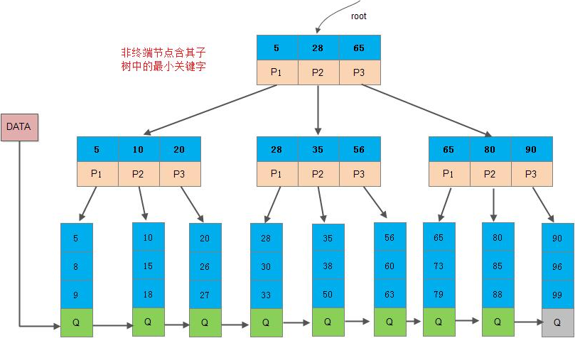
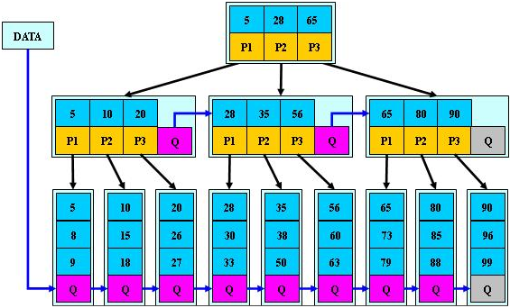
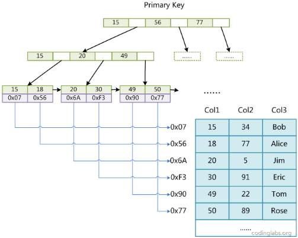
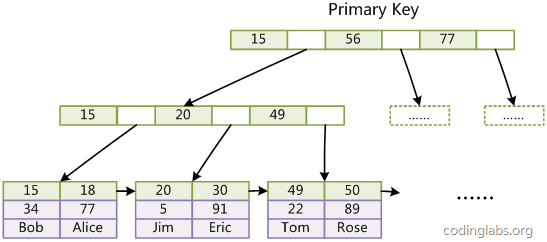
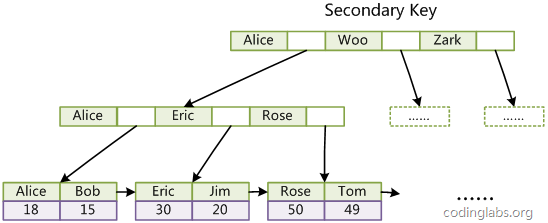

B树
当我们有大量数据在磁盘中存储时需要查询某一数据时，我们不可能将其一次性加载到内存中，此时，我们可以在内存中只保存数据项需要查询的部分信息，以及数据在磁盘中的位置，根据这些信息构建数据结构来方便查找，自然我们想到了红黑树、AVL树这些数据结构，但是对于大量数据，比如10亿的数据我们平均需要进行30次左右的IO操作，这样就导致查询缓慢，IO次数成为性能瓶颈，如果我们需要提高效率，我们必须采用另一种数据结构来减少IO操作（压低树的高度），提高CPU利用率（将一个节点的数据个数增加）
B树就是这样符合我们要求的一种数据结构，一棵M阶(M>2)的B树，是一棵平衡的M路搜索树，可以是空树或者满足一下性质：
- 每一个节点最多有 m 个子节点
- 每一个非叶子节点（除根节点）最少有 m/2 个子节点
- 如果根节点不是叶子节点，那么它至少有两个子节点
- 有 k 个子节点的非叶子节点拥有 k − 1 个键
- 所有的叶子节点都在同一层
这是一个m=5的B树：它的（1256）节点有5个子节点（这5个节点都为NULL），非叶子节点最少有2个键（图中未体现出），每个节点的子节点比键多1，节点中的键升序排列

搜索：
B树的子树大小排序规则，查找数据时，从根节点开始，依次和关键字进行比较，若比关键字大则和这一节点中下一关键字比较；若比关键字小则递归在这一关键字左下角的子节点中寻找，若比所有关键字都大则递归寻找这一节点的最后一个子节点，若遍历完最后一个叶子节点还没有找到则返回false
插入：
插入需要确保插入的键不在B树中，首先我们搜索得到插入的位置，这个位置只能在叶子节点上，然后按照插入排序的规则将节点插入叶子节点上，这里有可能叶子节点数量已经到达了m-1这是再次插入就会导致数组越界的情况，这时我们可以多开一个空间，就可以先插入再调整了。
所以插入流程就变为，先插入，再判断此节点是否小于m，若小于m则插入完成。
若等于m则说明节点已满，破环了规则，需要分裂，将它平均地分裂成两个节点，从该节点的原有元素和新的元素中选择出中位数小于这一中位数的元素放入左边节点，大于这一中位数的元素放入右边节点，中位数作为分隔值，分隔值被插入到父节点中，这可能会造成父节点分裂，分裂父节点时可能又会使它的父节点分裂，以此类推。如果没有父节点（这一节点是根节点），就创建一个新的根节点（增加了树的高度）
下图中体现了依次插入1~7调整之后的结构

性能分析：
最多：第一层m-1，第二层m*(m-1)，第h层m^(h-1)*(m-1)
最少：第一层1，第二层2*(m/2)*(m/2)，第h层2*m/2^(h-1)
估算：m^h=n，在620亿个元素中，如果这棵树的度为1024，则需要小于4次即可定位到该节点，然后利用二分
查找可以快速定位到该元素，大大减少了读取磁盘的次数
代码：
1
2
3
4
5
6
7
8
9
10
11
12
13
14
15
16
17
18
19
20
21
22
23
24
25
26
27
28
29
30
31
32
33
34
35
36
37
38
39
40
41
42
43
44
45
46
47
48
49
50
51
52
53
54
55
56
57
58
59
60
61
62
63
64
65
66
67
68
69
70
71
72
73
74
75
76
77
78
79
80
81
82
83
84
85
86
87
88
89
90
91
92
93
94
95
96
97
98
99
100
101
102
103
104
105
106
107
108
109
110
111
112
113
114
115
116
117
118
119
120
121
122
123
124
125
126
127
128
129
130
131
132
133
134
135
136
137
138
139
140
141
142
143
144
145
146
147
148
149
150
151
152
153
154
155
156
157
158
159
160
161
162
| template<class K, int M>
struct BTreeNode {
K _keys[M];
BTreeNode<K, M>* _subs[M + 1];
BTreeNode<K, M>* _parent;
size_t _keysize;
BTreeNode()
: _parent(nullptr)
, _keysize(0) {
for (size_t i = 0; i < M + 1; ++i) {
_subs[i] = nullptr;
}
}
};
template<class K, int M>
class BTree {
typedef BTreeNode<K, M> Node;
public:
std::pair<Node*, int> Find(const K& key) {
Node* cur = _root;
Node* parent = nullptr;
while (cur) {
int i = 0;
while (i < cur->_keysize) {
if (key < cur->_keys[i]) {
break;
} else if (key > cur->_keys[i]) {
++i;
} else {
return std::make_pair(cur, i);
}
}
parent = cur;
cur = cur->_subs[i];
}
return std::make_pair(parent, -1);
}
bool Insert(const K& key) {
if (_root == nullptr) {
_root = new Node;
_root->_keys[0] = key;
_root->_keysize = 1;
return true;
}
std::pair<Node*, int> ret = Find(key);
if (ret.second != -1) {
return false;
}
Node* node = ret.first;
K k = key;
Node* child = nullptr;
while (1) {
_InsertKey(node, k, child);
if (node->_keysize < M) {
return true;
} else {
int mid = M / 2;
Node* newnode = new Node;
int j = 0;
int i = mid + 1;
while (i < M) {
newnode->_keys[j] = node->_keys[i];
newnode->_subs[j++] = node->_subs[i];
if (node->_subs[i]) {
node->_subs[i]->_parent = newnode;
}
node->_keys[i] = K();
node->_subs[i++] = nullptr;
newnode->_keysize++;
}
newnode->_subs[j] = node->_subs[i];
if (node->_subs[i]) {
node->_subs[i]->_parent = newnode;
}
node->_subs[i] = nullptr;
node->_keysize -= (newnode->_keysize + 1);
if (node->_parent == nullptr) {
_root = new Node;
_root->_keys[0] = node->_keys[mid];
_root->_subs[0] = node;
_root->_subs[1] = newnode;
node->_parent = newnode->_parent = _root;
_root->_keysize = 1;
node->_keys[mid] = K();
return true;
} else {
k = node->_keys[mid];
child = newnode;
node->_keys[mid] = K();
node = node->_parent;
}
}
}
return true;
}
void _InsertKey(Node* node, const K& key, Node* child) {
int end = node->_keysize - 1;
while (end >= 0 && node->_keys[end] > key) {
node->_keys[end + 1] = node->_keys[end];
node->_subs[end + 2] = node->_subs[end + 1];
--end;
}
node->_keys[end + 1] = key;
node->_subs[end + 2] = child;
if (child) {
child->_parent = node;
}
node->_keysize++;
}
void _InOrder(Node* cur) {
if (cur == nullptr) {
return;
}
int i = 0;
while (i < cur->_keysize) {
_InOrder(cur->_subs[i]);
std::cout << cur->_keys[i] << " ";
++i;
}
_InOrder(cur->_subs[i]);
}
void InOrder() {
_InOrder(_root);
std::cout << std::endl;
}
private:
Node* _root = nullptr;
};
|
B+树
B树和B+树十分相似，是B树升级版，B+树更充分的利用了节点的空间，让查询速度更加稳定，其速度完全接近于二分法查找。B+树查找的效率要比B树更高、更稳定、更适合文件系统；两者的区别：
非叶子节点的子树指针与关键字个数相同，非叶子节点中只存储关键字作为查找索引即可（稀疏索引），不保存关键字对应的数据指针，所以这样使得每个节点所能保存的关键字大大增加，树的层级更少所以查询数据更快
所有关键字记录的指针都要存在叶子节点的链表中（稠密索引，缓存的命中率也会比B树高）且链表中的节点都是有序的，B+树只有达到叶子节点才能命中，所以每次数据查询的次数都一样
为所有叶子节点增加一个链指针，方便遍历，可以用于非主键搜索（全表扫描）

搜索：和B树类似，不过，在查找时，若非叶子节点上的关键字等于给定值，并不终止，而是继续向下直到叶子节点
插入：和B树类似，不过，父节点存储的是索引，分裂时需要向上更新索引
B*树
B*树是再B+树上的改进，在B+树的非根和非叶子结点再增加指向兄弟的指针

除此之外， B*树的非叶子结点关键字个数至少为(2/3)*M，即块的最低使用率为2/3（代替B+树的1/2），这是因为B*树分裂时当一个结点满了，如果它的下一个兄弟结点未满，那么将一部分数据移到兄弟结点中，再在原结点插入关键字，最后修改父结点中兄弟结点的关键字（因为兄弟结点的关键字范围改变了）如果兄弟也满了，则在原结点与兄弟结点之间增加新结点，并各复制1/3的数据到新结点，最后在父结点增加新结点的指针；所以，B*树分配新结点的概率比B+树要低，空间使用率更高
mysql的索引
索引是为了方便用户快速找到所寻的数据的一种数据结构，常见的索引分为：主键索引、唯一索引、普通索引、全文索引
索引是以空间换时间，当添加一条记录，除了添加到表中，还要维护二叉树，速度有影响，但不大
MyISAM
MyISAM引擎是MySQL5.5.8版本之前默认的存储引擎，不支持事务，支持全文检索，使用B+Tree
作为索引结构，叶节点的data域存放的是数据记录的地址，主索引和辅助索引在结构上没有任何区别（非聚集索引 ）

InnoDB
InnoDB存储引擎支持事务，MySQL5.5.8版本开始，InnoDB是默认的存储引擎。InnoDB支持B+树索引、全文索引、哈希索引。但InnoDB使用B+Tree作为索引结构时，具体实现方式与MyISAM不同
MyISAM索引文件和数据文件是分离的，索引文件仅保存数据记录的地址。而InnoDB索引，表数据文件本身就是按B+Tree组织的一个索引结构，这棵树的叶节点data域保存了完整的数据记录。这个索引的key是数据表的主键，因此InnoDB表数据文件本身就是主索引
所以InnoDB要求表必须有主键（MyISAM可以没有）如果没有显式指定，则MySQL系统会自动选择一个可以唯一标识数据记录的列作为主键，如果不存在这种列，则MySQL自动为InnoDB表生成一个隐含字段作为主键，这个字段长度为6个字节，类型为长整形

InnoDB的辅助索引data域存储相应记录主键的值而不是地址，所有辅助索引都引用主键作为data域，但是辅助索引搜索需要检索两遍索引：首先检索辅助索引获得主键，然后用主键到主索引中检索获得记录
